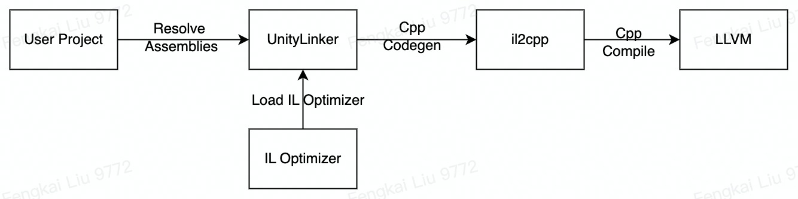
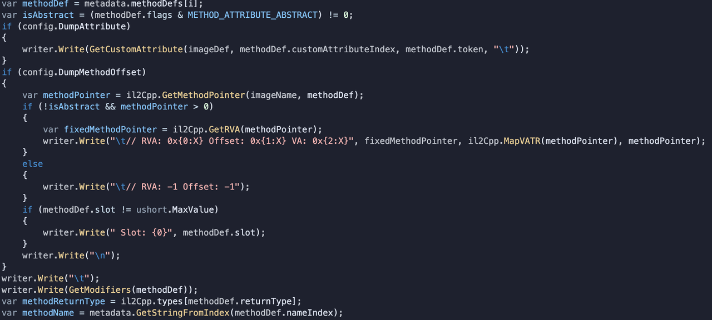
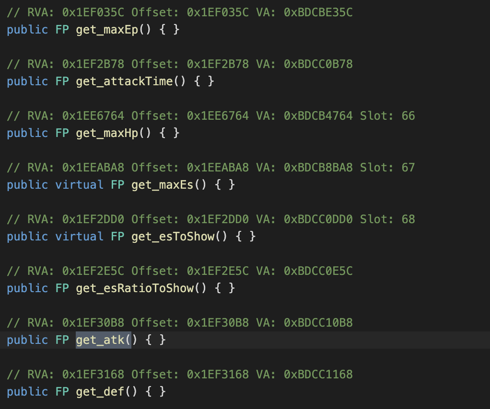
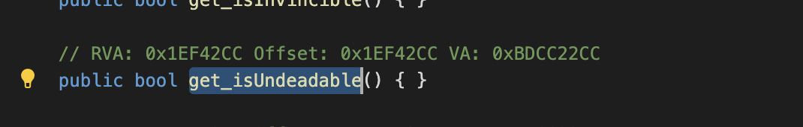

前言
在终端设备上，出于游戏的便携性与计算性能的考虑很多手机游戏经常以 PVE 本地计算为主 + 联网 sync 数据的模式组合的方式进行设计（例如本地的卡片、塔防、战斗计算 + 联网的抽卡、购买以及异步联机功能），其他本身就是单机游戏当然就全部由本地进行计算。而无论 PC 游戏还是 Mobile 游戏的修改器开发，也通常有以下的两种方案：
- 通过劫持网络连接进行修改
- 通过对指定内存数据进行修改
但是两种方案都有一些局限性和容易被发现的问题：
- 劫持网络修改：开发商使用加密 websocket 的连接发送数据就很难被分析劫持，并且通过对发送数据包前后的数据进行本地校验很容易在本地发现问题。
- 指定内存数据修改：现在的游戏开发商都会有单独的守护线程对扫描修改内存的行为进行监控，并且笔者在尝试分析的过程中工具也很容易被分析出来、另外就是如果有本地的重计算校验也很容易被分析出来。
在最近一段时间的工作中笔者恰好对 Unity il2cpp 逻辑、C# 静态分析以及 Android 平台的 Dex IR 修改比较熟悉。因此在本文中笔者提出了一种能够应用我们已有知识的方案，通过对 Unity 应用的 il2cpp 产物进行分析、通过对 C# IL 与 Dex IR 的分析修改来直接修改游戏本体的方式来应用技术。
这样的方案有以下几种好处：
- 不修改网络数据能够避免 Web 数据校验
- 不通过监控内存实现避免干扰和扫描
- 相对于能实现同样功能的直接进行「二进制分析修改」来说，代码可读性更好容易进行持续迭代开发
效果展示
方案设计
上文中我们简述了方案的思路，包含几个方面：
- Unity il2cpp 二进制产物的分析：通过对 il2cpp 的各种分析获取指定函数的指针地址（？）。
- 编写针对指定指针的 Hook 函数：有指定的指针地址之后我们可以通过写类似 Hook 的方案来对指针指向的内容来进行修改。
- 通过修改 Dex IR 织入 Hook 模块：编写好指定的 Hook 函数之后我们还需要通过编写一些指定的 bytecode 来使得 Android 能够加载我们的 Hook 模块。
破题：函数指针分析
il2cpp 背景知识
il2cpp 是 Unity 自己开发的一套 C# 的 aot backend。从整体的数据流程上来看，用户编写的 C# 代码会先被 C# 的 compiler frontend 翻译成 CIL bytecode 格式，随后会通过 Linker 进行 strip code，再被 il2cpp 程序将 CIL 逐个文件翻译为 Cpp 文件，最终被 LLVM 程序编译为 native 程序。

关于 il2cpp 编译流程的相关技术文章分析之前笔者已经写过，此处不再赘述，可以参考以下文章 or 分享了解更多技术细节：
- Rono - Unity CIL Static Optimizer ：ReIL 是笔者正在开发的一个 C# Optimizer 打通了整条针对 C# / Unity 编译的 pipeline ，并且在此之中实现了多种静态分析、VM 分析相关的 Pass 。
- [Unity il2cpp compilation.pptx]() ：笔者还进行过一个 Unity il2cpp 流程分析的相关分享。分享视频（略）
Method 的编译逻辑论证
il2cpp 实际上更多是一个 c# => cpp 的 transpiler ，与其说是一个完整的 aot 方案，更像是针对逐个 bytecode 进行 dump 转义生成的流程。
因此生成 cpp 部分保留了相对充分的 vm 内容，可以被认为 C# 的每个 module 、method、field 都会在静态分析的阶段进行提前计算，计算出 virtual table、method slot 等相关静态参数。每个 Module 的编译结果都会生成一个类似 s_methodPointers 的结构，引用该 module 的全部方法：
static Il2CppMethodPointer s_methodPointers[1027] =
{
Comments_Start_mA6AE4B777CE1A3C2B23062670AEE6A98277A3797,
Comments_Update_mF7B79710EF16558F936AE4072AE7A52D102FEC68,
Comments_OnValidate_m20F7B0A4DB028B6A1B54B874822B9E3C75E3DA1C,
Comments_add_m007D6FD441E35A90BF724F06C3981BB07FB96625,
Comments_setUniversalSpeed_m2607F62D7AB83939B8537A4CE030EAAB71191A15,
Comments_initRowPos_m5481CC4F50E02E189C305968FFCE7F51CC4A45BE,
Comments_gradientPos_m9DD6E215FF49B1963333E88664FCE851F647FCB7,
Comments__ctor_m3C9DD1C32C5503C3D961B231F1F91D767C9A6E19,
// ...
}
而在每个 il2cpp module 的 def 之中也会引用该函数指针 list ：
extern const CustomAttributesCacheGenerator g_AssemblyU2DCSharp_AttributeGenerators[];
IL2CPP_EXTERN_C const Il2CppCodeGenModule g_AssemblyU2DCSharp_CodeGenModule;
const Il2CppCodeGenModule g_AssemblyU2DCSharp_CodeGenModule =
{
"Assembly-CSharp.dll",
1027,
s_methodPointers,
0,
NULL,
s_InvokerIndices,
0,
NULL,
0,
NULL,
0,
NULL,
NULL,
g_AssemblyU2DCSharp_AttributeGenerators,
NULL, // module initializer,
NULL,
NULL,
NULL,
};
而在对 virtual method 进行实际进行调用的过程中，会使用对 runtime 查找的方式进行搜索：
// RenderTexture buffer = RenderTexture.GetTemporary(source.width/4, source.height/4, 0);
RenderTexture_t5FE7A5B47EF962A0E8D7BEBA05E9FC87D49A1849 * L_0 = ___source0;
NullCheck(L_0);
int32_t L_1;
L_1 = VirtFuncInvoker0< int32_t >::Invoke(5 /* System.Int32 UnityEngine.Texture::get_width() */, L_0);
VirFuncInvoker 实际持有的第一个参数就是 method pointer 在实际存储的 vtable slot 。因此我们可以得知 il2cpp method 本身在二进制程序之中有相对稳定的地址和偏移量，比如并不是类似 VM 的 load 机制使得不同的函数每次加载有不同偏移量地址。
分析 il2cpp 与 metadata 生成偏移地址
il2cpp 的编译结果会产生两个主要产物：libil2cpp.so 与 global-metadata.dat 。其中 libil2cpp.so 为 il2cpp 编译产生出的 so library，而· global-metadata.dat 本身保存了 il2cpp 在编译流程产生的各类 metadata 比如 class hierarchy, method pointer 等各种信息，例如上文中计算的函数指针数组、vtable slot 的计算的固定值。因此我们在此处要编写程序读取程序反编译的结果的 libil2cpp 与 global-metadata 的信息进行分析。

public ulong GetMethodPointer(string imageName, Il2CppMethodDefinition methodDef)
{
if (Version >= 24.2)
{
var methodToken = methodDef.token;
var ptrs = codeGenModuleMethodPointers[imageName];
var methodPointerIndex = methodToken & 0x00FFFFFFu;
return ptrs[methodPointerIndex - 1];
}
else
{
var methodIndex = methodDef.methodIndex;
if (methodIndex >= 0)
{
return methodPointers[methodIndex];
}
}
return 0;
}
将具体的函数地址偏移量的 dump 生成出来我们就可以得出每个 property 与 method 的指针偏移量。

有了指针的偏移量我们就可以通过 libil2cpp.so 本身的内存地址来获取到实际的指针位置来进行 Hook 或者进行替换。
* 破解 metadata 加密
相对主流的商业游戏会针对 il2cpp 内部的数据段与 metadata 段进行加密，使得我们不能够通过反编译程序对 il2cpp 的内部数据段进行分析，这种时候我们我们需要对 il2cpp 内部的数据段进行解密。无论如何加密，在应用中实际使用的时候内存的调用中是有被解密的，因此我们只需要能够给从内存中抓取到对应的 libil2cpp 就可以了。
这里笔者不便细述可以给出两种技术方案：
- il2CppDumper： https://github.com/Perfare/Zygisk-Il2CppDumper 如果有 Root 设备，我们可以通过安装脸谱也使用 Hook 来编译一个针对应用的内存钩子来进行 dump 分析。
- 直接内存 dump：如果没有 Root 设备，我们也可以通过普通的内存分析器来进行分析并抓取到 libil2cpp 在实际内存中的数据段就可以了。
承题：Hook 函数编写
Cydia Substrate 基础逻辑
在获取了函数的具体指针的 offset 之后，其实如果指向修改函数的具体内容，我们可以直接通过把 binary 拖进 IDA 来增补 bytecode 进行修改。不过本身使用 IDA 进行修改二进制的方案比较麻烦，并且每次都要进行类似的查找和修改并且逻辑比较复杂。因此方案上打算直接使用一个 Hook 方案就可以，比如 Cydia Substrate, Dobby 等。
这里我使用了 Cydia Substrate 包裹的一个 Android 实现模板 https://github.com/joeyjurjens/Android-Hooking-Template 进行编写，这里也顺带阅读了下 Cydia Substrate 的使用原理。
_extern void MSHookFunction(void *symbol, void *replace, void **result) {
return SubstrateHookFunction(NULL, symbol, replace, result);
}
Cydia Substrate 本身基于对某个函数指针地址的替换来进行实现，主要流程可以简述为：修改函数的入口，先跳转到代替函数，对原来的函数入口做一个备份返回。备份指令：
uintptr_t source(reinterpret_cast<uintptr_t>(symbol));
uintptr_t target(reinterpret_cast<uintptr_t>(replace));
uint8_t *area(reinterpret_cast<uint8_t *>(symbol));
size_t required(MSSizeOfJump(target, source));
size_t used(0);
while (used < required) {
size_t width(MSGetInstructionWidthIntel(area + used));
if (width == 0) {
MSLog(MSLogLevelError, "MS:Error:MSGetInstructionWidthIntel(%p) == 0", area + used);
return;
}
used += width;
}
size_t blank(used - required);
uint8_t backup[used];
memcpy(backup, area, used);
这里针对 Hook 的函数备份了前两个指令并且为了替换这两个指令需要进行多少个指令进行还原。后续 copy 了一块新的内存用来存取新的 Hook 函数：
uint8_t *buffer(reinterpret_cast<uint8_t *>(mmap(
NULL, length, PROT_READ | PROT_WRITE, MAP_ANON | MAP_PRIVATE, -1, 0
)));
uint8_t *current(buffer);
for (size_t offset(0), width; offset != used; offset += width) {
hde64s decode;
hde64_disasm(backup + offset, &decode);
width = decode.len;
// copy & build jump .
最后会通过生成对应的 jump 指令来完成整个 Hook 函数部分的替换基础。
Hook 函数搜索实践
使用 Android-Hooking-Template 的话我们可以屏蔽使用 Hook 部分的方案使用细节了，只需要关注我们实际的编写的计算逻辑就可以了，这里面我们对 Cydia Substrate 的 Hook 进行一下封装以便于我们生成调用：
#define HOOK_DEF(ret, func, ...) \
ret (*orig_##func)(__VA_ARGS__); \
ret hook_##func(__VA_ARGS__)
#define HOOK_USE(ret, func) \
MSHookFunction((void *)getRealOffset(ret), (void *) hook_##func, (void **) &orig_##func); \
其中 getRealOffset 的调用实际上是通过 libil2cpp 的基地址来计算实际的地址：
const char* libName = "libil2cpp.so";
DWORD get_libBase(const char* libName);
DWORD getRealOffset(DWORD address);
DWORD get_libBase(const char* libName) {
FILE *fp;
DWORD addr = 0;
char filename[32], buffer[1024];
snprintf(filename, sizeof(filename), "/proc/%d/maps", getpid());
fp = fopen(filename, "rt");
if (fp != NULL) {
while (fgets(buffer, sizeof(buffer), fp)) {
if (strstr(buffer, libName)) {
addr = (uintptr_t) strtoul(buffer, NULL, 16);
break;
}
}
fclose(fp);
}
return addr;
}
DWORD getRealOffset(DWORD address) {
if (libBase == 0) {
libBase = get_libBase(libName);
}
return (libBase + address);
}
这里我们开始搜索我们在上一步 dump 的 method pointer offset 的文件来找到我们需要的一些函数来进行分析，比如这里我们发现了 get_isUndeadable 这个方法来判断某些角色是否为不可被击杀的（例如某个 NPC 之类）：

我们可以编写如下的 Hook 代码：
HOOK_DEF(bool, get_isUndeadable, void* _this) {
int side = orig_get_side(_this);
bool ret = orig_get_isUndeadable(_this);
if (side != 1) {
return ret;
}
return true;
}
这里我们调用了另一个 get_side 函数来判断当前 this pointer 的指针指向的对象是哪方面的对象，如果是我们自己的对象当然应该是 Undeadable 但是敌方对象应该能够被杀死：
HOOK_DEF(int, get_side, void* _this) {
int rec = orig_get_side(_this);
return rec;
}
而实际上 get_side 的返回结果其实是一个枚举对象，这个对象在 cpp 层面可以直接使用 int 来模拟：
public enum SideType
{
public int value__; // 0x0
public const SideType NONE = 0;
public const SideType ALLY = 1;
public const SideType ENEMY = 2;
public const SideType BOTH_ALLY_AND_ENEMY = 3;
public const SideType NEUTRAL = 4;
}
至此我们对整个流程的功能修改已经结束了，我们可以搞定我们想要对 Unity 游戏的修改了！最后我们可以通过 template 把 hook 编译成一个独立的 libhook.so 就可以准备最后的环节。
收尾：Dex IR 织入
Dex IR 修改背景知识
Android Dex IR 的修改方案比较多，整体流程上也可以视作重新分析 Dex 文件格式并在我们需要部分的 IR 进行分析、修改。在挑选框架上我们可以选择的工具比较多，可以使用 fb 的 Redex 、Google 的 R8 、以及很多其他的 dextools 来进行分析。这部分也是笔者的工作内容之一，关于 Redex 的相关内容可以参考以下一些内容：
- 关于 Redex 包体积上的一些分析 基于ReDex的包体积优化及TikTok落地实践
- 关于使用 Redex 织入代码的便捷方案 ReDex: GenAsSExpr - new helper pass to write redex itself ，笔者在 Redex 之中支持了一种编写 S-Expr 的便捷方式来插入 Dex 方法的方案。
此处我们插入的代码内容比较少，我直接选择了 Android-Hooking-Template 的直接插入的方案，读者可以自己考虑如何使用 Redex 来实现同样的功能。
插入 Dex IR & load Hook
Android-Hooking-Template 提供了一个插入的 LoadLibrary 的机制，例如如下的代码很简单就是直接 load libhook.so 的代码，这个函数在一个 Handler 里面被子线程异步调用：
# virtual methods
.method public run()V
.locals 1
.prologue
.line 17
const-string/jumbo v0, "hook"
invoke-static {v0}, Ljava/lang/System;->loadLibrary(Ljava/lang/String;)V
.line 18
return-void
.end method
找到 Unity 调用的实际容器 Lcom/unity3d/player/UnityPlayerActivity ，我们可以在 onCreate 的最前面的代码里插入我们的 load 逻辑：
.method protected onCreate(Landroid/os/Bundle;)V
.locals 1
const-string v0, "LOAD-HOOK"
invoke-static {v0, v0}, Landroid/util/Log;->e(Ljava/lang/String;Ljava/lang/String;)I
invoke-static {}, Lcom/loadLib/libLoader;->loadLib()V
const/4 v0, 0x1
invoke-virtual {p0, v0}, Lcom/unity3d/player/UnityPlayerActivity;->requestWindowFeature(I)Z
这里我们直接插入了一个 invoke-static 的静态调用，这里我还加入了一个 Android Log 的调用来在 log 里观察 Hook 是否被正确加载。在这之后的逻辑就非常清晰了，我们插入 Dex IR、Copy libhook.so 到反编译的工程之内，并且把整个工程再 recompile 出来安装运行就可以了。
总结
这一篇文章写得很快并且跑通后从实际的操作上并没有非常复杂的逻辑，但是本身所使用的交叉技术知识比较多，比如：二进制分析、Unity il2cpp 的编译体系知识、CIL 的静态分析知识、Cpp Hook 方案、以及 Redex 等 Dex IR 修改方案等。开发的时候也是，因为每个步骤都是坑都换了几种方案来进行尝试，大概用了一两个晚上才把流程跑通。因此想完全消化可能还需要多一些实践，或者我也可以写一些更多详细的文章来表现更多方案的细节。